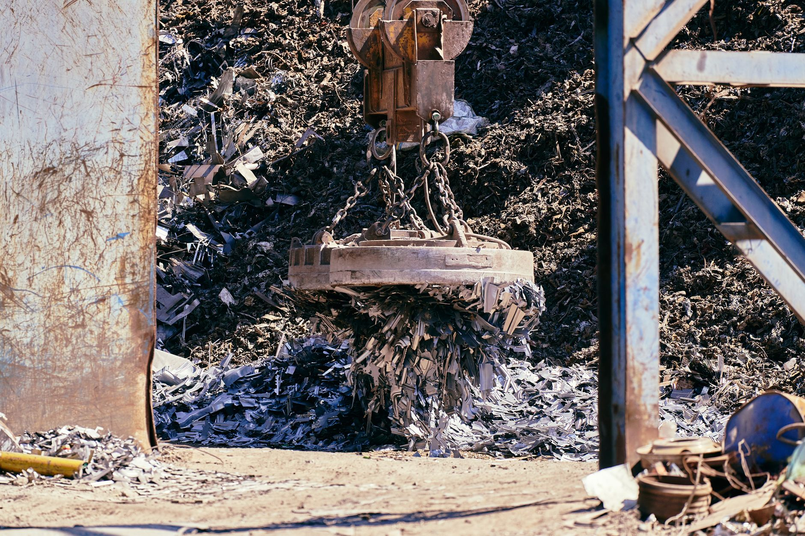

中 광물통제, AI 로봇 액추에이터까지 전선 확대

중국은 2023년 갈륨·게르마늄을 시작으로 2024년 안티모니, 2025년 흑연·비스무트까지 수출통제 대상을 단계적으로 확장했다. 2026년 현재 규제 대상 광물은 총 17종으로 늘었으며, 이 중 산업용 로봇 액추에이터에 직접 투입되는 네오디뮴·디스프로슘·테르븀이 새로 포함됐다.
전 세계 네오디뮴 정제의 85%, 디스프로슘 공급의 95% 이상이 중국산이다. 산업용 로봇 1대에 탑재되는 희토류 영구자석은 평균 2~5kg이며, 협동로봇(코봇) 시장이 2025년 기준 연간 12만 대 이상 출하되는 상황에서 중국 이외 대체 정제 시설은 현재 MP Materials(미국)와 Lynas(호주) 2곳에 불과하다.
AI 가속기 PCB에 쓰이는 탄탈럼 커패시터와 함께 로봇 구동 핵심인 BLDC 모터용 자석 소재 공급이 동시에 압박받고 있다. 현대로보틱스·레인보우로보틱스·두산로보틱스 등 국내 3사는 자석 소재 조달의 70% 이상을 중국산 완제품 또는 정제 원료에 의존하는 것으로 추정된다.
수출통제 확대 배경에는 '가격 무기화'에서 '공급망 구조 재편 강제'로의 전략 전환이 있다. 갈륨 가격이 9배 폭등한 선례를 보면, 이번 희토류 자석 소재 규제도 단순한 수급 조절이 아니라 글로벌 로봇·전장 업계가 중국 정제망에 구조적으로 재진입하도록 유도하는 레버리지 전술이다.
공급망 현장에서 이 흐름이 의미하는 것은 '광물 → 정제 → 부품 완제품'으로 이어지는 통제 전선의 하방 확대다. 과거 소재 단계에서만 걸렸던 규제가 이제 모터·액추에이터 완성품 레벨까지 내려오고 있다. 실제로 일부 중국 정제업체들은 수출 전 '가공도 기준'을 임의로 높여 반제품 형태의 수출도 통제 범위에 포함시키는 방식을 쓰고 있다.
한국 입장에서 더 위험한 것은 로봇 산업이 이제 막 국가 전략산업으로 지정되는 시점에 소재 공급망이 흔들린다는 점이다. 정부가 2025년 로봇산업 육성 펀드 3,000억 원 조성을 발표했지만, 자석 소재 국산화 로드맵은 2030년 이후 목표로 잡혀 있어 현 시점에서 4년 이상의 공백이 존재한다.
MP Materials(미국)와 Lynas(호주)는 이번 규제 확대로 수혜를 입는다. MP Materials는 2025년 기준 마운틴패스 광산에서 연간 네오디뮴-프라세오디뮴 산화물 약 6,000t을 생산하며, 미국 국방부와 10년 장기공급 계약을 체결한 상태다. 중국 외 조달처를 찾는 일본·유럽 로봇업체들의 장기계약 문의가 급증하고 있는 것으로 알려졌다.
일본 TDK·신에쓰화학은 희토류 자석 소재 재활용 및 정제 기술에서 독보적 위치에 있다. 두 기업 모두 중국 의존도를 30% 미만으로 줄인 상태이며, 규제 장기화 시 자석 완제품 공급업체로서 가격 결정권이 강화될 전망이다.
현대로보틱스·레인보우로보틱스·두산로보틱스 등 국내 3사는 단기적으로 원가 상승 압박에 직면한다. 협동로봇 1대당 자석 소재 비용이 현재 대비 30~50% 상승할 경우 영업이익률 2~4%p 추가 하락이 불가피하다.
유럽 자동차 OEM의 전장 부품 공급사 콘티넨탈·보쉬는 EV 구동 모터용 자석 소재 조달처를 긴급 다변화 중이지만, 비중국 정제 시설의 증설 리드타임이 18~24개월이어서 2027년 이전까지는 구조적 과부하 상태가 지속된다.
희토류 자석 소재를 사용하는 국내 제조사라면 지금 당장 BOM(자재명세서) 기준으로 네오디뮴·디스프로슘 함유 부품 비중을 전수 점검해야 한다. 특히 협력사 3차 이하 Tier에서 중국산 완제품 모터를 통째로 구매하는 경우, 소재 원산지 인증(CoO)이 없으면 미국·EU 공급망 실사 규정에 걸릴 수 있다.
대안 조달처로는 일본 신에쓰화학·TDK, 독일 바키움슈멜체(Vacuumschmelze), 미국 MP Materials 세 곳이 현실적이다. 단 이 세 곳 모두 현재 오더북이 12~18개월 선주문으로 꽉 차 있어, 장기공급계약(LTA) 체결 없이는 스팟 시장 진입이 어렵다.
실제 조달 현장에서는 — 중국 정제업체들이 '수출 허가 지연'을 반복하며 사실상 가격 협상 레버리지로 활용하는 패턴이 고착되고 있다. 지금은 가격이 아니라 납기 확보 자체가 경쟁력이다. 비중국 소재 공급계약을 현재 가격에 체결하는 것이 6개월 후 더 싼 곳을 기다리는 것보다 훨씬 낮은 리스크다.
이 포스팅은 쿠팡 파트너스 활동의 일환으로 수수료를 제공받습니다.